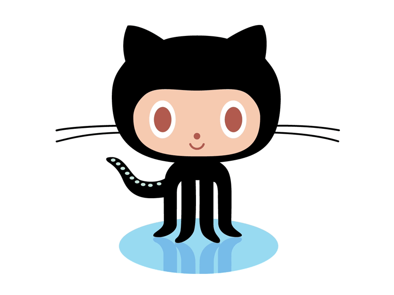

git-Github Workshop
Version Control System(VCS)
VCS is a software that helps software developers to work together and maintain a complete history of their work.
Allows developers to work simultaneously.
Does not allow overwriting each other’s changes.
Maintains a history of every version.
Different Types VCS
| CVCS | DVCS |
|---|---|
| no sendboxing | sendboxing |
| Latest code at a place | no latest code at a place |
| slow | fast |
| dependency upon central system | very less dependancy upon central system |
dvcs bybilography
commit
Commit holds the current state of the repository. A commit is also named by SHA1 hash.

Branch
Branches are used to create another line of development.By default, Git has a master branch
Merge
A Merge is the merging of other barnches into the master or some other branch
Pull
Pull operation copies the changes from a remote repository instance to a local one. The pull operation is used for synchronization between two repository instances.
Push
Push operation copies changes from a local repository instance to a remote one. This is used to store the changes permanently into the Git repository.
git init
git config
-git status
-git add
-git commit
-git log

-git branch branch_name
-git checkout branch_name
git stage
git merge

git diff
git rebase
git rebase master
git rebase master staging
git push
git fetch
git pull origin